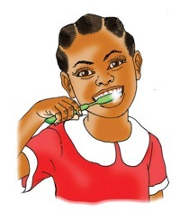
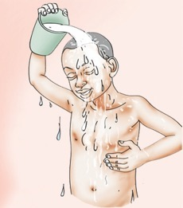
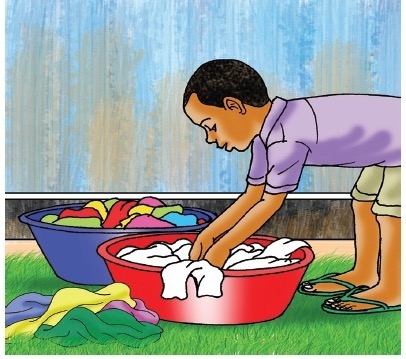

Page 33
S/N
Action
Answer
A pupil washing the body with soap, which is a bathing action.
(c)

A pupil brushing the teeth, which is not a bathing action.
(d)

A pupil pouring water over the head, which is a bathing action.
(e)

A pupil washing clothes, which is not a bathing action.
(f)
Mark whether each picture shows a step of bathing.
Picture (c)
Choose an answer
Tick - yes
Cross - no
Picture (d)
Choose an answer
Tick - yes
Cross - no
Picture (e)
Choose an answer
Tick - yes
Cross - no
Picture (f)
Choose an answer
Tick - yes
Cross - no